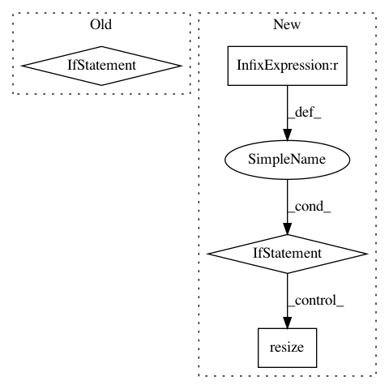

219459f15476426276e24329cdb6f091b5f7cf41,ilastik/applets/dataSelection/dataSelectionGui.py,DataSelectionGui,addFileNames,#DataSelectionGui#,458
Before Change
// What lanes will we touch?
startingLane, endingLane = self._determineLaneRange(fileNames, roleIndex, startingLane)
if startingLane is None:
// Something went wrong.
return
// If we"re only adding new lanes, NOT modifying existing lanes...
adding_only = startingLane == len(self.topLevelOperator)
// Create a list of DatasetInfos
try:
After Change
originalNumLanes = self.getNumLanes()
startingLane, endingLane = self._determineLaneRange(paths, startingLane)
if originalNumLanes < endingLane+1:
self.topLevelOperator.DatasetGroup.resize(endingLane+1)
info_slots = self.getInfoSlots(roleIndex)[startingLane:endingLane+1]
try:
new_infos = self._createDatasetInfos(roleIndex, paths, rois)
In pattern: SUPERPATTERN
Frequency: 3
Non-data size: 4
Instances
Project Name: ilastik/ilastik
Commit Name: 219459f15476426276e24329cdb6f091b5f7cf41
Time: 2019-06-26
Author: tomaz.vieira@embl.de
File Name: ilastik/applets/dataSelection/dataSelectionGui.py
Class Name: DataSelectionGui
Method Name: addFileNames
Project Name: baldassarreFe/deep-koalarization
Commit Name: 3a25edce742db97d936ffb645185b520878d0c6d
Time: 2017-05-06
Author: baldassarre.fe@gmail.com
File Name: dataset/resize.py
Class Name: ImagenetResizer
Method Name: resize_img
Project Name: sony/nnabla-examples
Commit Name: 56926bc8b4a158e1c40cddbc795303bc6a66f44d
Time: 2019-05-23
Author: sukriti.mehrotra@sony.com
File Name: semantic-segmentation/deeplabv3plus/image_preprocess.py
Class Name:
Method Name: resize